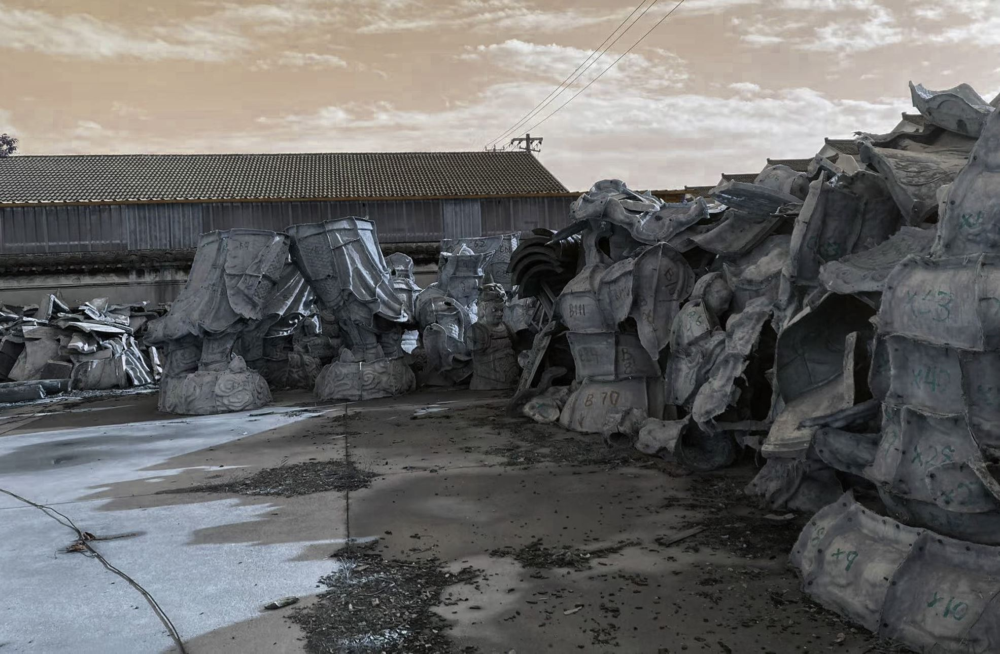
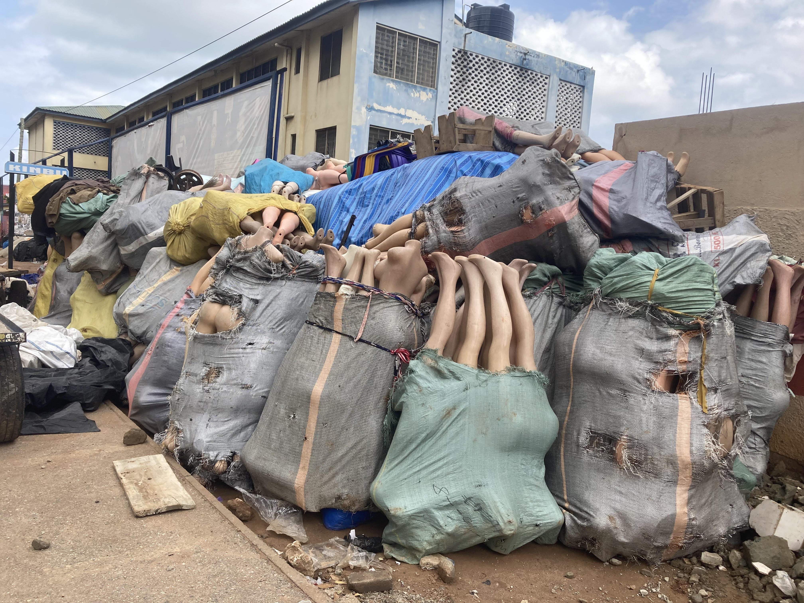

A long-term project in research phase (to be updated)


Olla ei mistään kotoisin (Of No Origin)
I came across the Finnish phrase "olla ei mistään kotoisin" when discussing with researcher/artist Dr. Lena Seraphin. Literally meaning "from nowhere," it can imply low quality or no worth. What does it mean to come from nowhere? Who decides whose lives and histories are worth archiving?